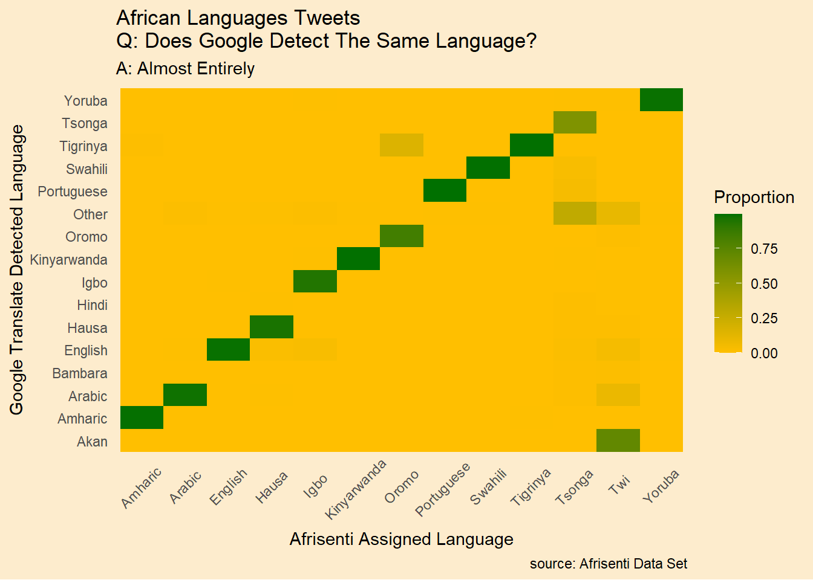

suppressPackageStartupMessages({
library(tidyverse)
library(googleLanguageR)
library(future)
library(furrr)
library(rvest)
})Sentiment Analysis Using Google Translate (Pt. 1)
Can an English speaker use Google Cloud Translate to conduct experiments with natural language processing? Let’s fund out. Like all my data science posts, I find interesting questions (to me, anyway) and answer them in ways that sharpen my R coding skills. I am reminded of the movie “Fast Times At Ridgemont High” where Sean Penn’s character thinks he can simultaneously “learn about Cuba and have some food.” The teacher, played by Ray Walston, takes a dim view of the pizza delivery. Hopefully, you, dear reader, will be more accepting.
Inspired by TidyTuesday
Some of the the R data science community participate in a weekly challenge called “Tidy Tuesday,” where an interesting data set is presented for analysis but mostly visualization. There are some tremendous examples of beautiful work posted on Twitter with the hashtag #tidytuesday.
African Tweets and Sentiment
Recently, the weekly dataset was a collection of over 100,000 tweets, apparently from 2022, in 14 African languages, with sentiment labels. The paper describing the set and methods is here (Muhammad et al. 2023). The TidyTuesday project and raw data are here. This is quite a diverse data set including many tweets in English, tweets in languages which, like English, use the Latin character set and tweets in other character sets, including Arabic.
I saw this as an avenue to ask a couple interesting questions.
- Can we apply sentiment analysis techniques to a translated version of this dataset? How good is Google Translate, anyway?
- Over the past year there has been much talk about the differences in attitudes of the “global north” vs. the “global south.” Does this data set reveal anything about that?
I also saw an opportunity to sharpen my skills in a couple areas, using the Google API for batch translation and using RStudio’s Tidytext and Tidymodels toolsets.
I split these explorations into four snack-able posts.
- In this post we show how to use Google Cloud Translate to batch translate the entire data set.
- Here we use the tidytext framework to do sentiment analysis with word valences.
- Next, we’ll compare machine learning approaches in the tidymodels framework to do sentiment analysis on both the native and translated tweets.
- Finally, let’s use the already assigned sentiment tags to explore African attitudes to the “global north.”
Disclaimer
The usual caveats apply. I am not a social scientist. I am a hobbyist. This is an exercise in R coding so I make no claim that my conclusions about any of this data are valid.
Get the Data
Here are the packages we’ll need for this project.
The TidyTuesday github repo has the Afrisenti dataset with all the languages combined. Let’s load it.
afrisenti <- readr::read_csv('https://raw.githubusercontent.com/rfordatascience/tidytuesday/master/data/2023/2023-02-28/afrisenti.csv',
show_col_types = FALSE)
afrisenti# A tibble: 111,720 × 4
language_iso_code tweet label inten…¹
<chr> <chr> <chr> <chr>
1 amh አማራ ክልል ፈልቶበታል ልኩን ማስገባት ነው!!! ሙስሊሞችን ጠልቶ 85… nega… dev
2 amh ሰውን አንገት በሚያስደፋ መልኩ ዝም ብሎ ሙድ መያዝ....ስልህ ያ ሰው… nega… dev
3 amh የቤት ውስጥ ጥቃት – ያለሰሚ – ያለተመልካች nega… dev
4 amh Ethiopia ወያኔን ለመጣል ምን ድርሻ ነበራችሁ ? ከወደቀ በኋላ ጉ… nega… dev
5 amh ኦሮሞ ምንም ቢማር ከብት ነዉ አያስተዉልም ጥንብ ዘረኛ ናቸዉ nega… dev
6 amh ቲሽ ጨለምተኛ ዱቄት 97 ላይ ቆመሃል እንዴ ጊዜው ነጉዷል 2012 ነው… nega… dev
7 amh በምዕራብ ኦሮሚያ በሚገኙ በሁለቱ የወለጋ ዞኖች (ምስራቅ ወለጋና ሆሮ … nega… dev
8 amh ያየሰው ሺመልስ ላይ የደረሰው ነገር ያሳዝናል። በቃል ኣላምረውም ላይም… nega… dev
9 amh ያልተረጋጋች ሀገር ምርጫ አያስፈልጋትም nega… dev
10 amh ደደቡ እና አረፋው የኢትዮጵያው ጠ/ሚ አብዪ ከኤርትራው ኣያቶላህ ኢሰያ… nega… dev
# … with 111,710 more rows, and abbreviated variable name ¹intended_useTranslate the Tweets
To use Google translate in batch mode we’ll need an API key. I don’t understand Google. For some of their services, like Maps, a single API key is needed. Instead, for Translate, we need a JSON file with the key. Once you get the key, store the file name in your .Renviron file with the key name “GL_AUTH” then the googlelanguageR package will automatically authenticate when it loads.
Note
Getting the Google Language API key is a complicated procedure and I won’t detail it here but you can find complete instructions in the googlelanguageR package introduction.
Once once your key is created you can start translating with R. This isn’t free. Translating over 100,000 tweets cost me about US$15. A couple bucks was wasted because I submitted all the tweets including those in English. You might choose to filter English tweets out first. If you just want to work with the same data set you can download my translations (see below) for FREE.
I first tried shooting the whole data set into the translation routine but Google protested that I was sending too much. I divided the set into batches of 100 tweets at a time which fixed the problem.
We can dramatically speed things up using the furrr and future packages to allow parallel processing using just three lines of code. furrr adapts the purrr::map() family of functions to allow parallel execution. Very simple. Amazing!
future::plan(multicore) # will use all available cores
batch_size = min(100, nrow(afrisenti))
afrisenti_translated <-
seq(0, nrow(afrisenti) - batch_size,
by = batch_size) |>
furrr::future_map_dfr(\(x) {
gl_translate(afrisenti$tweet[(x + 1):(x + batch_size)])
}, .progress = TRUE)
future::plan(sequential) # back to normalIt’s worth looking over the code above because it packs a lot of power in few lines and, to me, shows how cool R is. Basically, we identify the batches of rows from the data set we want to ship out to Google and translate them in as many parallel streams as our hardware allows.
Let’s clean up the data a little.
# merge with source data and clean up a little
afrisenti_translated <- afrisenti_translated |>
na.omit() |>
select(-text) |>
bind_cols(afrisenti) |>
rowid_to_column(var = "tweet_num") |>
mutate(tweet_num = as.numeric(tweet_num))
mutate(intended_use = as_factor(intended_use)) |>
mutate(detectedSourceLanguage = as_factor(detectedSourceLanguage)) |>
mutate(language_iso_code = as_factor(language_iso_code)) |>
mutate(label = as.factor(label))While it’s not strictly necessary, I wanted to see the long names for the languages, rather than just 2-character ISO codes. Using Wikipedia I created a file that we can use for reference. The rvest package makes turning an HTML table into a data frame easy. At the same time, let’s make sure the language labels from the data set are consistent with the Google language labels.
# get languages from wikipedia
# take the second table on the page
iso_lang <- html_table(read_html("https://en.wikipedia.org/wiki/List_of_ISO_639-1_codes#External_links"))[[2]]
# since Wikipedia is subject to frequent change, if the entry doesn't work
# you can get the file here
# iso_lang <- readr::read_csv('https://raw.githubusercontent.com/apsteinmetz/tidytuesday/master/2023-02-28_african_language/data/iso_lang.csv',
# show_col_types = FALSE)
iso_lang <- iso_lang %>%
rename(assigned_language = `639-2/T`,
detected_language = `639-1`,
language = `ISO language name`) %>%
select(1:3)
# clean up langauge names
afrisenti_translated <- afrisenti_translated %>%
mutate(language_iso_code = str_replace_all(language_iso_code,"pt-MZ","por")) %>%
mutate(language_iso_code = str_replace_all(language_iso_code,"ary","ara")) %>%
mutate(language_iso_code = str_replace_all(language_iso_code,"arq","ara")) %>%
mutate(language_iso_code = str_replace_all(language_iso_code,"pcm","eng")) %>%
rename(assigned_language = language_iso_code,
detected_language = detectedSourceLanguage) %>%
left_join(select(iso_lang,-assigned_language)) %>%
rename(detected_long = language) %>%
left_join(select(iso_lang,-detected_language)) %>%
rename(assigned_long = language)
# save it for later use
save(afrisenti_translated,file="data/afrisenti_translated.rdata")Save Some Money
That done, YOU don’t want to pay $15 and you don’t have to. Let’s download the translated Afrisenti data set from my repo instead.
afrisenti_translated <- readr::read_csv('https://raw.githubusercontent.com/apsteinmetz/tidytuesday/master/2023-02-28_african_language/data/afrisenti_translated.csv',
show_col_types = FALSE)
afrisenti_translated# A tibble: 111,720 × 9
tweet_num translatedText detec…¹ assig…² tweet label inten…³ detec…⁴ assig…⁵
<dbl> <chr> <chr> <chr> <chr> <chr> <chr> <chr> <chr>
1 1 Amhara region … am amh አማራ … nega… dev Amharic Amharic
2 2 Having a mood … am amh ሰውን … nega… dev Amharic Amharic
3 3 Domestic viole… am amh የቤት … nega… dev Amharic Amharic
4 4 Ethiopia, what… am amh Ethi… nega… dev Amharic Amharic
5 5 No matter how … am amh ኦሮሞ … nega… dev Amharic Amharic
6 6 Tish, dark pow… am amh ቲሽ ጨ… nega… dev Amharic Amharic
7 7 Local resident… am amh በምዕራ… nega… dev Amharic Amharic
8 8 What happened … am amh ያየሰው… nega… dev Amharic Amharic
9 9 An unstable co… am amh ያልተረ… nega… dev Amharic Amharic
10 10 The idiot and … am amh ደደቡ … nega… dev Amharic Amharic
# … with 111,710 more rows, and abbreviated variable names ¹detected_language,
# ²assigned_language, ³intended_use, ⁴detected_long, ⁵assigned_longDo a Reality Check
Now that the hard work is done let’s do some preliminary checks, Let’s see if the language that Google detects agrees with the assigned language in the data set. First we convert the language long names to factors and see how many levels there are. These are the 13 assigned languages.
afrisenti_translated <- afrisenti_translated |>
mutate(across(contains("long"),\(x) as.factor(x)))
levels(afrisenti_translated$assigned_long) [1] "Amharic" "Arabic" "English" "Hausa" "Igbo"
[6] "Kinyarwanda" "Oromo" "Portuguese" "Swahili" "Tigrinya"
[11] "Tsonga" "Twi" "Yoruba" Here are the languages that Google detects.
levels(afrisenti_translated$detected_long) [1] "Afrikaans" "Akan"
[3] "Amharic" "Arabic"
[5] "Aymara" "Bambara"
[7] "Basque" "Bengali"
[9] "Bosnian" "Bulgarian"
[11] "Catalan, Valencian" "Chichewa, Chewa, Nyanja"
[13] "Chinese" "Corsican"
[15] "Croatian" "Czech"
[17] "Danish" "Dutch, Flemish"
[19] "English" "Esperanto"
[21] "Estonian" "Ewe"
[23] "Finnish" "French"
[25] "Gaelic, Scottish Gaelic" "Galician"
[27] "Ganda" "German"
[29] "Greek, Modern (1453–)" "Guarani"
[31] "Gujarati" "Haitian, Haitian Creole"
[33] "Hausa" "Hindi"
[35] "Hungarian" "Igbo"
[37] "Indonesian" "Irish"
[39] "Italian" "Japanese"
[41] "Javanese" "Kannada"
[43] "Kinyarwanda" "Korean"
[45] "Kurdish" "Latin"
[47] "Latvian" "Lingala"
[49] "Luxembourgish, Letzeburgesch" "Malagasy"
[51] "Malay" "Malayalam"
[53] "Maltese" "Maori"
[55] "Marathi" "Norwegian"
[57] "Oromo" "Pashto, Pushto"
[59] "Persian" "Polish"
[61] "Portuguese" "Quechua"
[63] "Romanian, Moldavian, Moldovan" "Russian"
[65] "Samoan" "Shona"
[67] "Sindhi" "Slovak"
[69] "Slovenian" "Somali"
[71] "Southern Sotho" "Spanish, Castilian"
[73] "Sundanese" "Swahili"
[75] "Swedish" "Tamil"
[77] "Telugu" "Tigrinya"
[79] "Tsonga" "Turkish"
[81] "Turkmen" "Ukrainian"
[83] "Urdu" "Uzbek"
[85] "Vietnamese" "Welsh"
[87] "Western Frisian" "Xhosa"
[89] "Yoruba" "Zulu" Uh, oh. 90 detected languages vs. 13 assigned languages. Is this a problem? What fraction of tweets are in languages not mentioned in the original set?
alt_count <- afrisenti_translated |>
filter(!(detected_long %in% levels(assigned_long))) |>
nrow()/nrow(afrisenti_translated)*100
paste0(round(alt_count,1),"%")[1] "6.9%"Not a big number. Let’s collapse all but the top 15 languages into an “other” category.
How frequently does Google disagree with the assigned language?
afrisenti_translated <- afrisenti_translated |>
mutate(detected_long = replace_na(as.character(detected_long,"Unknown"))) |>
mutate(detected_long = fct_lump_n(detected_long,15))
xt <- xtabs(~afrisenti_translated$assigned_long +
afrisenti_translated$detected_long) |>
broom::tidy() |>
rename(assigned = 1,google = 2) |>
group_by(assigned) |>
mutate(Proportion = n/sum(n))
xt |>
ggplot(aes(assigned, google,fill=Proportion)) + geom_tile() +
scale_fill_gradient(low = "#FFBF00", high = "#007000") +
theme(
plot.background = element_rect(fill = "#FDECCD", color = NA),
legend.background = element_blank(),
axis.ticks = element_blank(),
axis.text.x = element_text(angle = 45,vjust = .7,hjust = .6),
panel.background = element_blank(),
panel.grid = element_blank()
) +
labs(
title = "African Languages Tweets\nQ: Does Google Detect The Same Language?",
subtitle = "A: Almost Entirely",
x = "Afrisenti Assigned Language",
y = "Google Translate Detected Language",
caption = "source: Afrisenti Data Set"
)
The fact that disagreement about the tweet language is so rare gives us some confidence that we are on the right track.
Then look at the first row.
print(cat(
afrisenti_translated$tweet[1],"\n",
afrisenti_translated$translatedText[1],"\n",
afrisenti_translated$label[1]))አማራ ክልል ፈልቶበታል ልኩን ማስገባት ነው!!! ሙስሊሞችን ጠልቶ 85% ሙስሊሞች በሚኖርባት ኦሮምያ ጋር ግንኙነትን አትሰበው !!!
Amhara region needs moderation!!! He hates Muslims and does not think of relations with Oromia, where 85% of Muslims live!!!
negativeNULLA quick glance at the translation shows obviously negative sentiment. We are off to a promising start. In the next post we’ll use the tidytext framework to measure the net balance of sentiment for each tweet.
References
Muhammad, Shamsuddeen Hassan, Seid Yimam, Idris Abdulmumin, Ibrahim Sa’id Ahmad, Ousidhoum Nedjma, Ayele Abinew, David Adelani, et al. 2023. “SemEval-2023 Task 12: Sentiment Analysis for African Languages (AfriSenti-SemEval).” In Proceedings of the 17th International Workshop on Semantic Evaluation (SemEval-2023).